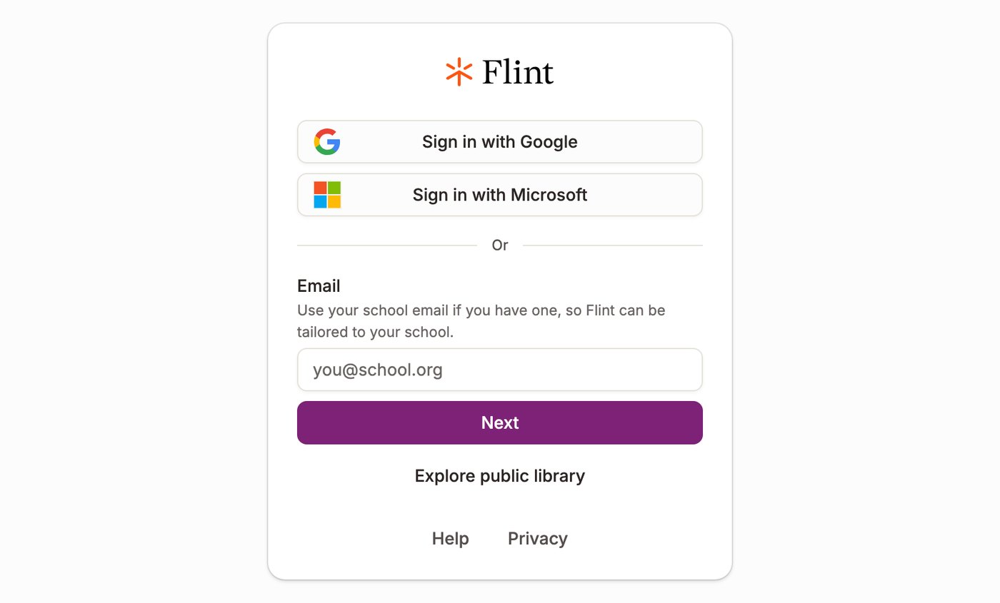
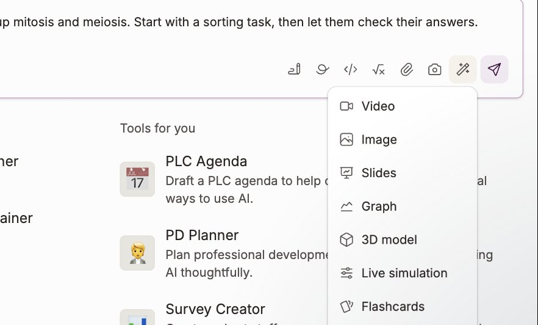
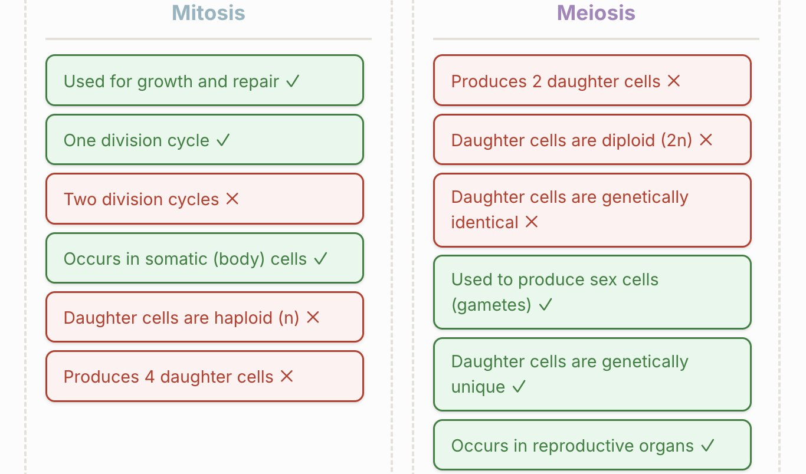

Flint K12
Flint is an AI platform built for schools. In Round 1 you use it to turn your barrier into something students can use: an interactive or a short explainer video, built from your own teaching materials.
Best for
Guardrails and student-facing safety. Your materials are the boundary: Flint builds from what you give it.
Start here
app.flintk12.com
Sign in with Microsoft.
Exercise 1: Log in

- Go to app.flintk12.com.
- Choose Sign in with Microsoft and use your HKIS account.
Exercise 2: Make an interactive
Everything starts in the box on Flint’s Home page. You describe what you want, add your materials, and choose what kind of thing Flint should make.

- Type your prompt in How can I help you today?
- Add your materials with the paperclip: slides, readings or notes.
- Press the magic wand and choose Live simulation for an interactive, or Video for an explainer. Then send.
Create an interactive for Grade 9 students who mix up mitosis and meiosis. Start with a sorting task, then let them check their answers.
We tested this prompt on 1 October 2026. Swap in your own barrier and subject.

| On the wand menu | What it makes |
|---|---|
| Live simulation | An interactive with controls students can use |
| Video | A short explainer video |
| Slides | A slide deck |
| Flashcards | A set of flash cards |
| Practice problems | Practice questions |
| 3D model | A model students can turn and explore |
| Graph and Image | A graph, or a picture |
Exercise 3: Make an explainer video
The same box makes a short video. Attach the slides you already teach from, so the video uses your diagram and your words rather than a generic version.
Make a two-minute explainer of how a bill becomes law, for Grade 8, using my attached slides. Pause after each step with one question.
Attach your slides with the paperclip first. A video takes longer to make than an interactive.
Use your prompt spine from the session. Change “Build a single-screen tool” to what you want Flint to make, and keep the rest: who it is for, what they see first, what they can do, and the language level.
Push it further
These videos come from Flint’s own channel. Each one loads only when you press play.
A ten-minute tour of Flint: chatting with Sparky, building activities, reviewing student work, and the shared activity libraries.
How to turn a chat with Sparky into a student activity, preview it the way students will see it, and keep adjusting it. Flint’s screens have changed a little since this was made.
Two minutes on the interactive pieces Flint can build in a chat, such as quizzes, drag-and-sort tasks and 3D models, and the View as Student preview.
Join codes that send students straight into your activity, and Sparky’s feedback on work students upload, such as essays, lab reports and handwritten pages.
How to make slide decks, and how to change the voice, language and speaking speed of Flint’s explainer videos.
A longer session. From 7:56 the Flint team builds a chemistry flame-test simulation, and explains how to make the same kind of interactive for any subject.